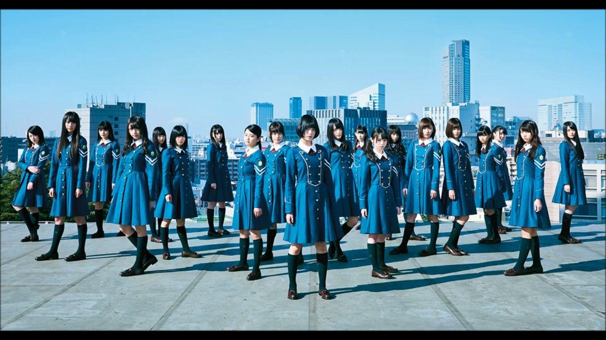

 Sakurazaka46 merupakan salah satu grup idol yang cukup populer di negeri sakura yaitu Jepang. Grup ini sebelumnya disebut sebagai Kanji Keyakizaka46 saat grup masih bernama Keyakizaka46. Keyakizaka46 sendiri merupakan saudari dari idol grup Nogizaka46. Saat ini sakurazaka46 beranggotakan sebanyak 27 orang. Mereka memulai debutnya sebagai Keyakizaka46 pada tanggal 6 April 2016. Saat menjadi Keyakizaka46 grup ini telah merilis berbagai single dengan center Hirate Yurina mulai dari single Silent Majority, Futari Saison, Ambivalent, dan single lainnya sampai single terakhir mereka yaitu Kuroi Hitsuji. Akan tetapi pada tahun 2020, pihak manajemen melakukan rebranding terhadap grup Keyakizaka46 dengan mengganti nama grup menjadi Sakurazaka46. Namun berdasarkan informasi yang beredar di kalangan penggemar, kabarnya rebranding tersebut dilakukan karena Hirate Yurina mengundurkan diri dari grup karena kesibukannya yang cukup padat dan kondisi kesehatannya yang sudah terganggu dan sempat cedera. Selain Hirate Yurina juga terdapat beberapa member lainnya yang juga mengundurkan diri atau lulus dari grup. Maka setelah berganti nama menjadi Sakurazaka46, mereka memulai debutnya kembali pada tanggal 9 Desember 2020, di bawah label Sony Records. Meskipun telah melakukan rebranding menjadi Sakurazaka46, namun grup ini masih cukup banyak diminati oleh penggemar.
| No. | Member | Generasi |
|---|---|---|
| 1. | Rina Uemura | 1 |
| 2. | Minami Koike | 1 |
| 3. | Fuyuka Saito | 1 |
| 4. | Rina Inoue | 2 |
| 5. | Hikari Endo | 2 |
| 6. | Rei Ozono | 2 |
| 7. | Akiho Onuma | 2 |
| 8. | Marino Kousaka | 2 |
| 9. | Yui Takemoto | 2 |
| 10. | Hono Tamura | 2 |
| 11. | Karin Fujiyoshi | 2 |
| 12. | Kira Masumoto | 2 |
| 13. | Rina Matsuda | 2 |
| 14. | Hikaru Morita | 2 |
| 15. | Rena Moriya | 2 |
| 16. | Ten Yamasaki | 2 |
| 17. | Rika Ishimori | 3 |
| 18. | Riko Endo | 3 |
| 19. | Reina Odakura | 3 |
| 20. | Nagisa Kojima | 3 |
| 21. | Airi Taniguchi | 3 |
| 22. | Yuzuki Nakashima | 3 |
| 23. | Mio Matono | 3 |
| 24. | Itoha Mukai | 3 |
| 25. | Yu Murai | 3 |
| 26. | Miu Murayama | 3 |
| 27. | Shizuki Yamashita | 3 |